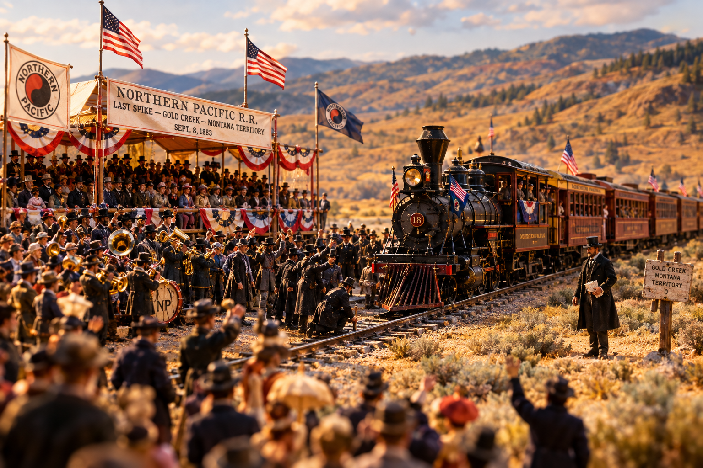

The Blind Pool: The Rise and Fall of Henry Villard

Pull that lantern closer, and I'll tell you about a man who once talked several million dollars out of the richest people in America without ever telling them what he meant to buy with it. They handed it over anyway. That's the part worth sitting with. Not the railroad, not the spike, not the brass band. The part where grown men with banks behind them signed their names to a paper that did not say where the money was going, because Henry Villard was the one holding the pen.
He was born Ferdinand Heinrich Gustav Hilgard in Bavaria, and he came across the water at eighteen with no English to speak of and a father who had washed his hands of him. He picked up the language the hard way, in newsrooms, and by the time he was twenty-five he was a correspondent good enough to be sitting in Springfield, Illinois, taking down the words of a lanky prairie lawyer named Lincoln. He rode with the armies through the war and wrote what he saw. That was the first life. Nothing in it suggested the second.
The Bondholders' Errand
What put him on the rails was other people's bad investments. German bondholders had put money into Oregon railroad paper, the money had gone quiet, and in 1874 they sent Villard west to find out what had become of it. He came into a country of muddy river towns and steamboat monopolies and unfinished grade, and instead of writing a report and going home, he stayed and took the whole thing over. Steamboats on the Columbia. Portage roads. Track. By 1879 he had bound it up into the Oregon Railway and Navigation Company, and he owned the water-level route through the Cascades, the only easy door in that whole wall of mountains.
Which was fine business, right up until he learned that the Northern Pacific, coming west out of Minnesota with a land grant behind it, meant to build its own line down the Columbia and put its own trains through his door. A smaller man would have sued. A poorer man would have sold out. Villard did neither.
Sign Here. Don't Ask.
In the winter of 1881 he went to the money men of New York and asked them to subscribe to a venture he declined to describe. He would not say what he was buying. He would not say how much of it. He told them only that it would pay, and that they would learn the rest when he was ready to tell them. The newspapers named it the Blind Pool, and it is remembered by that name still.
He asked for eight million dollars on his word alone. He got it, and more, in a matter of hours, from men who did not know what they had bought until they read it in the papers.
What they had bought was the Northern Pacific itself. Villard turned the money loose on the open market, took controlling ownership of the railroad that had meant to run him over, and by autumn he was sitting in its president's chair. It was the most audacious raid in the history of American railroading, and he had pulled it off with a promise and a subscription list.
Then he had to actually build the thing, and that is where the arithmetic began to eat him.
Gold Creek, and the Telegrams
On the eighth of September, 1883, at a place called Gold Creek in Montana Territory, the eastern rails and the western rails came together. Villard put on a show for it that half the world attended. Excursion trains out of St. Paul carrying hundreds of guests. Ministers and lords from England and Germany. Ulysses S. Grant himself standing at the rail with a spike maul in his hands. They called it the golden spike, though it was nothing of the kind: the iron they drove that day was reportedly the same working spike that had started the line back in Minnesota years before, dug up and carried west so the road could close the circle with its own beginning.
The party rolled on west after that, down the Columbia and out to salt water. On the fourteenth Villard came into Seattle by steamer, and the town had scrubbed itself for him: arches over the streets, evergreen boughs, bunting for miles, the whole place turned out to cheer the man who had bound them to the rest of the country. And as he stepped onto the dock, somebody put a fistful of telegrams from the East into his hand.
A newspaperman standing near enough to watch him read them said he seemed to turn to marble, and wrote of the terrible look of agony on his face. Nobody on that dock knew what the wires said. The crowd went right on cheering. But the telegrams were the sound of the floor going out: his stocks were falling, the Northern Pacific among them, and the cost of the line he had just finished had run so far past his estimates that no celebration was going to cover the difference.
Four Months to the Bottom
He held on through the fall and could not hold longer. On the fourth of January, 1884, Henry Villard resigned the presidency of the Northern Pacific. Not four months separated the spike from the surrender. His mansions on Madison Avenue, the grand hotel he had commissioned for Portland, the whole architecture of the empire, all of it stopped mid-build or passed to other hands, and the railroad he had taken by ambush went on without him.
Now here is the thing that makes him more than a cautionary tale. He got back up. He was on the Northern Pacific board again by the end of the decade, he put money into a tinkerer named Edison and ended up president of the company that became General Electric, he owned newspapers, and he gave enough to a struggling little university on Puget Sound that they remember his name there yet.
Still. Set him beside Jim Hill, who built his road west a paying mile at a time and never once went broke, and you have the two ways a man can take a continent. One crept. One leapt. The one who leapt got there first, got the parade, got Grant and the bunting and the arches. And then got the telegrams.
What Really Happened
Henry Villard was born Ferdinand Heinrich Gustav Hilgard in Speyer, Bavaria, in 1835, and emigrated to the United States in 1853. He worked as a journalist, covered the Lincoln–Douglas debates and the Civil War, and came to Oregon in 1874 as an agent for German bondholders. He organized the Oregon Railway and Navigation Company in 1879.
In February 1881 he raised what the press called the "Blind Pool," soliciting subscriptions without disclosing the purpose. Sources differ on the amount: he is commonly said to have sought about $8 million, with accounts of the total raised ranging from roughly $12 million (the capitalization of the resulting Oregon and Transcontinental Company) up to $16–20 million. He used the funds to acquire a controlling interest, commonly cited as about 60 percent, in Northern Pacific common stock, and became the railroad's president.
The last spike was driven at Gold Creek, Montana Territory, on September 8, 1883, with former President Ulysses S. Grant present; the spike was an ordinary iron one reported to be the same spike used at the line's Minnesota groundbreaking. Villard reached Seattle on September 14, 1883, where he received telegrams reporting the collapse of his stocks. Construction costs had far exceeded estimates, and he resigned the Northern Pacific presidency on January 4, 1884. He later returned to the NP board (1888–1893), led Edison General Electric, owned the New York Evening Post and The Nation, and donated land and money to the University of Washington. He died in 1900.
The frontier dialect and the lantern-keeper framing above are storytelling. The dates, figures, and events are drawn from the historical record, with the blind-pool amount flagged where sources disagree.
Sources & Further Reading
- Henry Villard (1835–1900), The Oregon Encyclopedia
- Henry Villard, Wikipedia
- Now & Then: Villard's Grand Occasion, HistoryLink.org
- Northern Pacific Railroad Completion Site, 1883, Wikipedia
- 1883: An Extravagant Ceremony Marks the Completion of the Northern Pacific Railway
- Henry Villard, Encyclopaedia Britannica
- Henry Villard, the donor who saved the 'U', UW Magazine